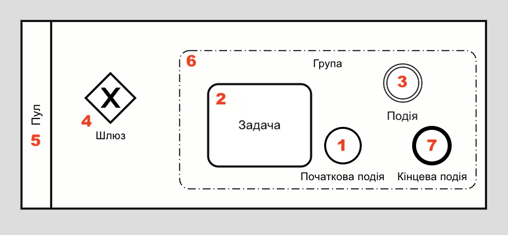
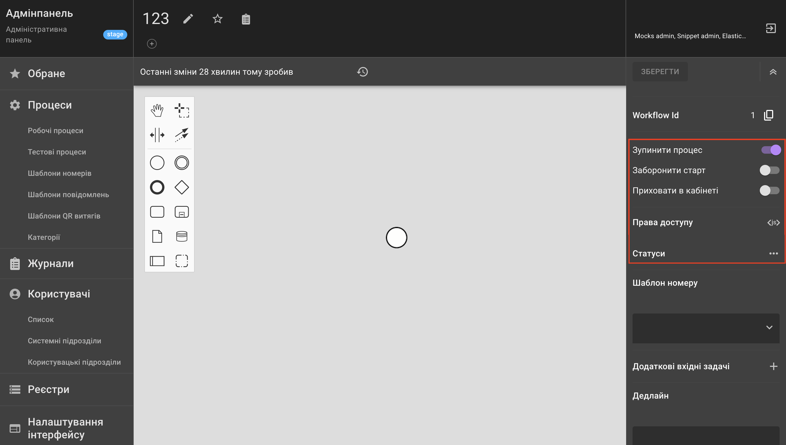
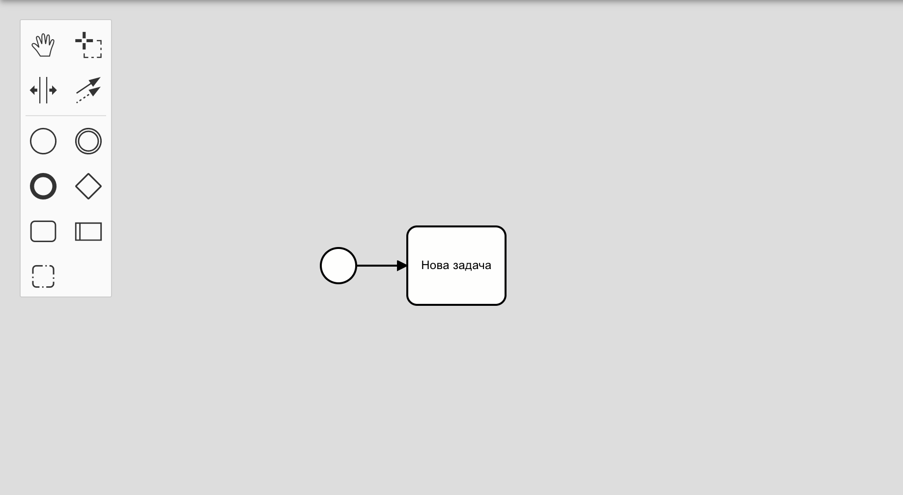
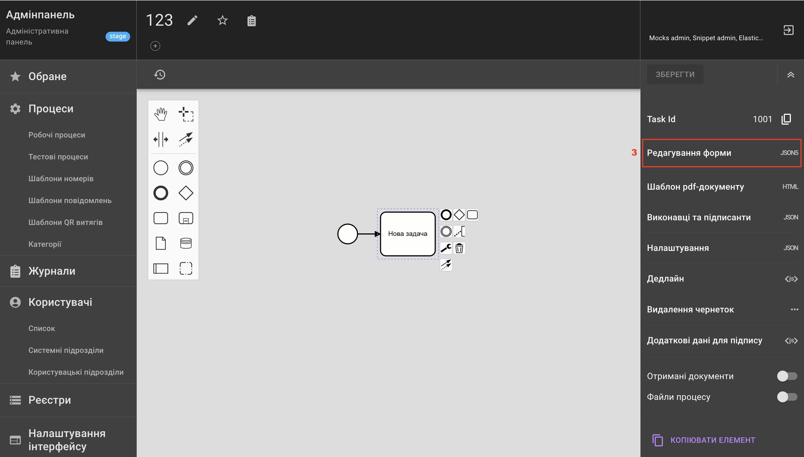
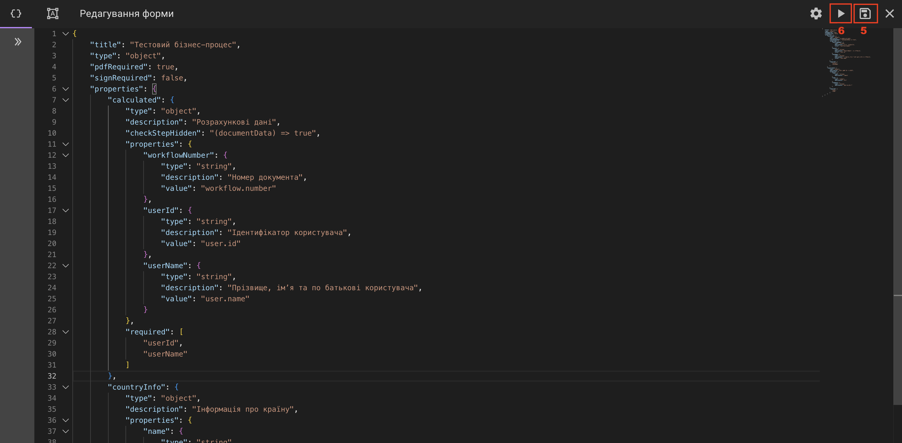
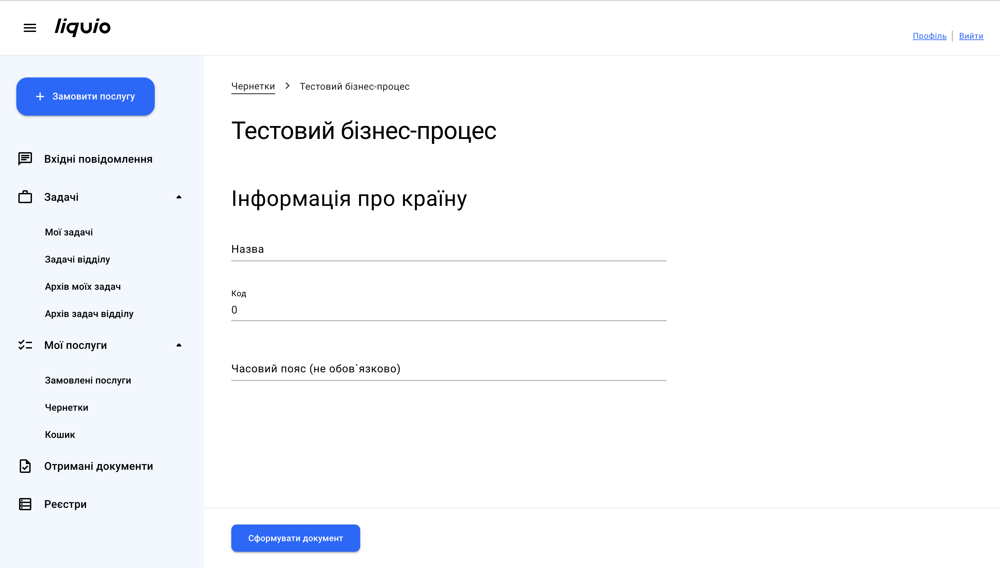

Як налаштувати процес?
Передумови
Перед початком налаштування створіть процес та виконуйте налаштування в Редакторі процесу.
За потреби переходу в Редактор процесу натисніть на обраний процес із переліку в розділі BPMN та форми.
Елементи процесу
Схема (діаграма) процесу налаштовується з використанням основних елементів BPMN-нотації:
1) Початкова подія (Start Event) — це точка відліку початку процесу. Не відповідає за виконання функціональних дій і використовується виключно для позначення моменту старту процесу. Усі процеси починаються з початкової події.
2) Задача (Task) — базовий елемент, у межах якого виконується основна робота з даними.
3) Подія (Event) — елемент, який позначає певну одноразову подію всередині процесу, наприклад: інформування користувача, затримку, запит до реєстру, тригер запуску іншого процесу тощо.
Найчастіше використовувані типи подій
| Тип події | Опис |
|---|---|
| Сповіщення | Використовується для відправки користувачу повідомлень. Приклади використання: • інформування про прийняття заявки; • повідомлення про результат розгляду заявки. |
| Затримка | Використовується для встановлення паузи перед виконанням наступних дій у процесі. Може застосовуватись, зокрема: • перед відправкою даних у зовнішню систему; • перед відправкою сповіщення користувачу. Типи затримки: • статична — задається у хвилинах, годинах, днях або тижнях; • динамічна — розраховується до конкретної дати або на визначений проміжок часу. |
| Запит | Використовується для інтеграції з зовнішніми системами. Дозволяє: • відправляти дані у зовнішні системи; • отримувати дані або файли із зовнішніх систем. У межах події налаштовується тип запиту, метод, провайдер та перелік даних, що передаються. |
4) Шлюз (Gateway) — елемент, який керує розгалуженням або об’єднанням потоку процесу: визначає, куди піде виконання далі (за умовою чи паралельно) і як воно знову об’єднається.
Види шлюзів
| Тип шлюзу | Опис |
|---|---|
| Ексклюзивний | Використовується для вибору одного з можливих шляхів виконання процесу на основі умов. Використовується для: вибору одного варіанту з кількох. • У кожен момент часу може бути виконаний лише один вихідний потік. • Вибір шляху залежить від заданих умов. Коли використовувати: якщо процес може продовжитись тільки за одним сценарієм. |
| Паралельний | Використовується для одночасного виконання кількох гілок процесу та з можливістю їх подальшого об’єднання. Використовується для: одночасного запуску кількох потоків. • Усі вихідні гілки виконуються паралельно. • При об’єднанні процес продовжується лише після завершення всіх паралельних потоків. Паралельний шлюз може бути відкритим або закритим: • Якщо він відкритий, потік розділяється на кілька гілок, які виконуються незалежно одна від одної. • Якщо він закритий, потік також розділяється на кілька незалежних гілок, але в точці закриття всі гілки об’єднуються в один потік, і процес продовжується тільки після завершення всіх паралельних потоків. |
5) Пул (Pool) — елемент, який визначає загальні межі процесу. В рамках одного процесу використовується один пул, який охоплює весь процес і розділяється на лейни для відображення відповідальності. Лейн — це частина пулу, яка визначає роль (підрозділ), відповідальний за виконання елементів процесу.
6) Група (Group) — візуальне об’єднання пов’язаних елементів діаграми без впливу на логіку процесу.
7) Кінцева подія (End Event) — це точка завершення роцесу. Не відповідає за виконання функціональних дій і використовується для позначення моменту завершення процесу. Усі процеси завершуються кінцевою подією.

Робота з редактором процесу
Інструменти редактора
1) Рука (Hand) — інструмент, який дозволяє переміщувати всю діаграму або її частину у робочому полі. Використовується для перегляду різних частин процесу без зміни самих елементів.
2) Створити/Видалити простір (Create/Remove space) — інструмент для створення або видалення вільного місця між елементами на діаграмі. Дозволяє легко організовувати потоки процесу та уникати накладання об’єктів.
3) Ласо (Lasso) — інструмент для виділення кількох елементів одночасно за допомогою рамки. Використовується для масового переміщення, копіювання або видалення об’єктів на діаграмі.
4) Глобальне з’єднання (Global connect) — інструмент, що дозволяє швидко створювати зв’язки між різними елементами процесу. Використовується для підключення задач, подій та шлюзів без необхідності вручну вибирати точки підключення.
Налаштування процесу
1) Зупинити процес — забороняє виконання процесів по всіх заявам, у тому числі вже поданим користувачами. Використовується для тимчасового або постійного призупинення роботи процесу.
2) Заборонити старт — забороняє користувачам починати замовлення послуги. Використовується для контролю запуску нових процесів без впливу на вже активні.
3) Приховати в кабінеті — приховує процес від відображення в електронному кабінеті.
4) Права доступу — здійснює налаштування прав доступу в електронному кабінеті. Дозволяє визначити, хто може замовляти послуги в кабінеті.
5) Статуси — проміжні стани процесу, які можна відобразити користувачу в кабінеті, щоб він бачив поточний стан своєї заяви. Статус присвоюється після виконання відповідної задачі або події в процесі.
Детальніше про статуси
doing— позначає проміжні кроки процесу, наприклад, обробку заяви.done— позначає успішне завершення процесу, наприклад, позитивне рішення щодо заявки.rejected— позначає неуспішне завершення процесу, наприклад, помилку, відхилення заявки тощо.


Налаштування задачі
Задача як ключовий елемент процесу
Задача — це частина процесу, яка в загальному випадку вимагає певних дій від користувача, зокрема, заповнення форми. В межах задачі визначаються послідовні кроки, на яких користувач заповнює необхідну інформацію.
Для налаштування задачі:
1) Додайте елемент Задача в робочу область та з'єднайте його з Подією. 
2) Для переходу до налаштувань задачі натисніть на неї.
3) Перейдіть на вкладку Редагування форми, де виконується налаштування основної логіки задачі.

4) В режимі редагування форми додайте код задачі.
Примітка
Для опису форми задачі використовується формат JSON. При розрахунку деяких параметрів ці параметри можуть бути стрілковими функціями, що приймають значення документа.
Приклад коду задачі
5) Збережіть форму.
6) Запустіть процес.
Важливо
Під час запуску процесу переконайтесь, що перемикач Зупинити процес вимкнено.

Запуск процесу дозволяє заповнити форму створеної задачі в Електронному кабінеті.
